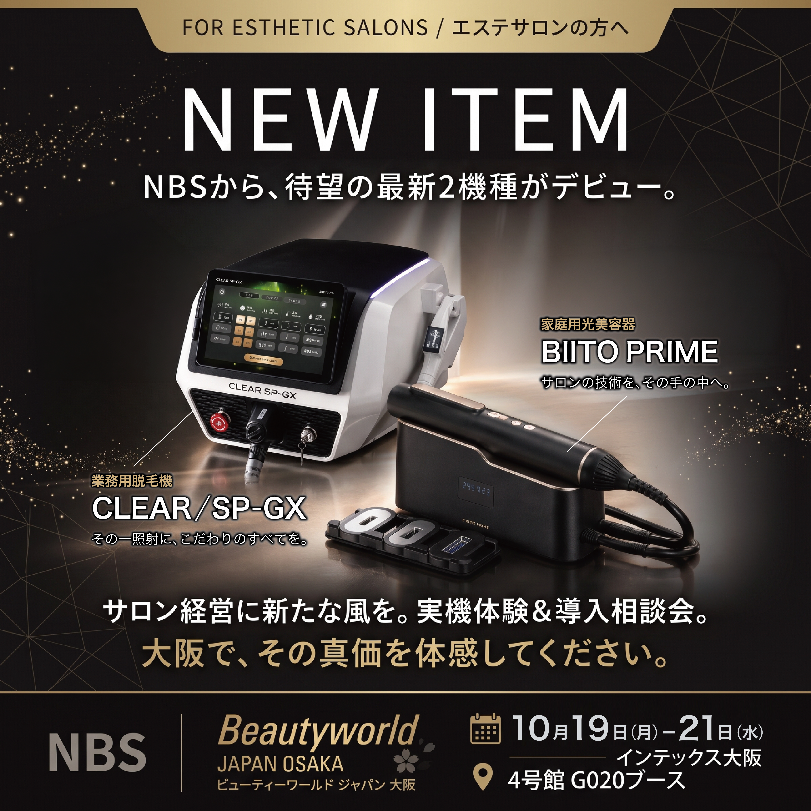
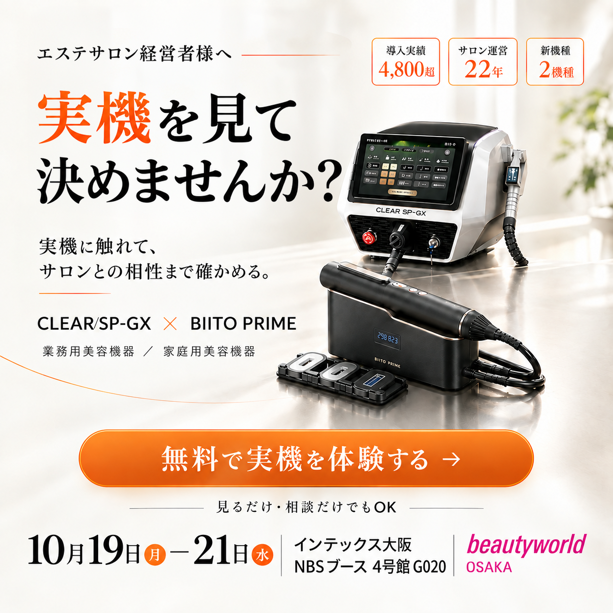
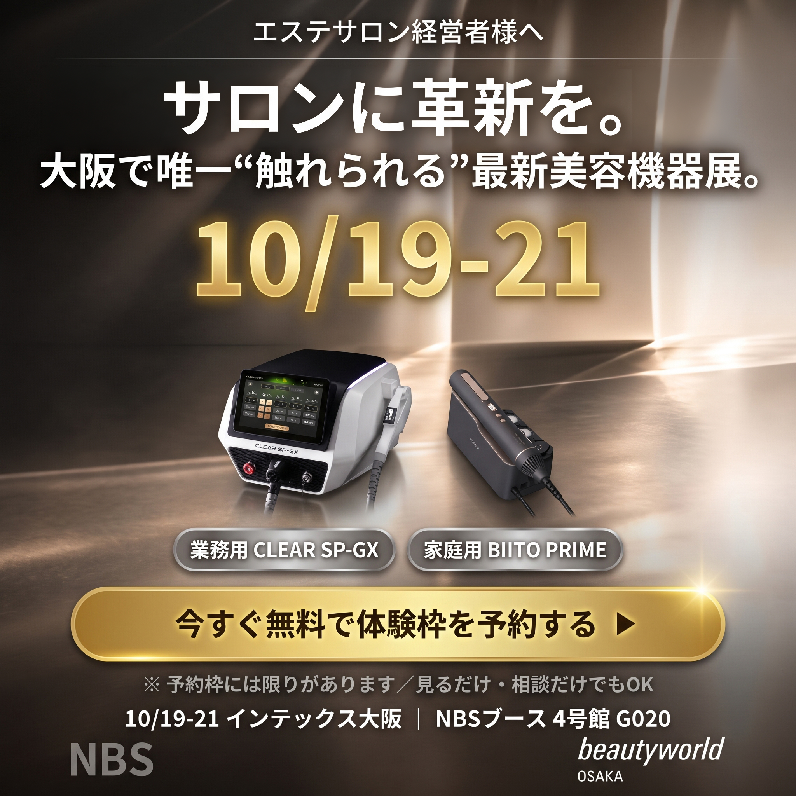

11月号連動パッケージ内のInstagram広告（NBS様ご支給クリエイティブ3案）の結果と、次回への示唆をまとめました。

新機種2機種のデビューを告知
| CTR | 2.37% |
|---|---|
| CPC | ¥40 |
| CPM | ¥942 |

「実機を見て決めませんか？」で直接の行動を促す
| CTR | 2.85% |
|---|---|
| CPC | ¥40 |
| CPM | ¥1,141 |

会期日程を主役に、会期直前の予約を後押し
| CTR | 2.65% |
|---|---|
| CPC | ¥38 |
| CPM | ¥1,009 |
| クリエイティブ | 広告費 | インプレッション | クリック | CTR | CPC | CPM |
|---|---|---|---|---|---|---|
| A案 NEW ITEM 告知型 | ¥12,070 | 12,819 | 304 | 2.37% | ¥40 | ¥942 |
| B案 課題提起型 | ¥79,379 | 69,591 | 1,985 | 2.85% | ¥40 | ¥1,141 |
| C案 期限訴求型 | ¥8,551 | 8,474 | 225 | 2.65% | ¥38 | ¥1,009 |
| 合計 | ¥100,000 | 90,884 | 2,514 | 2.77% | ¥40 | ¥1,100 |
※ CTR・CPC・CPMは配信実績そのままの値です。